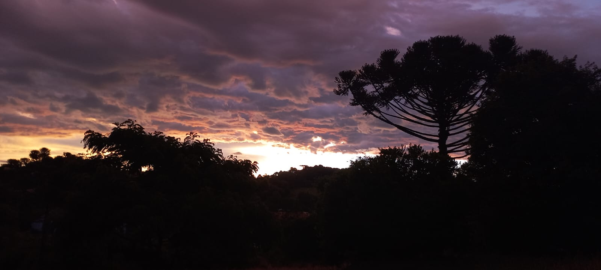
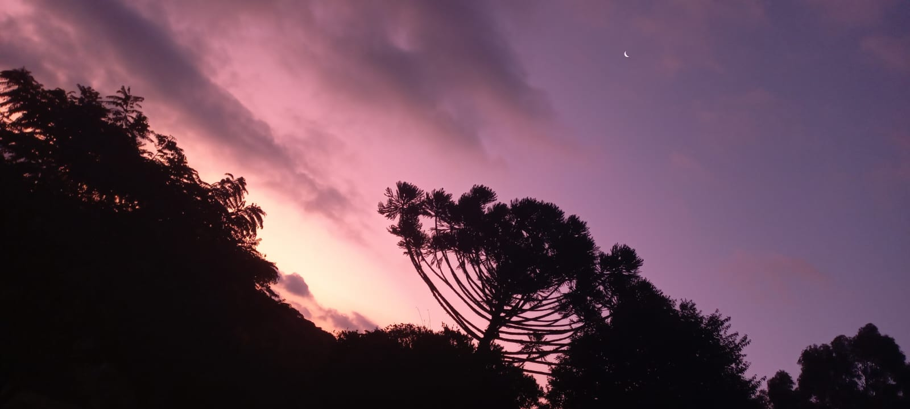
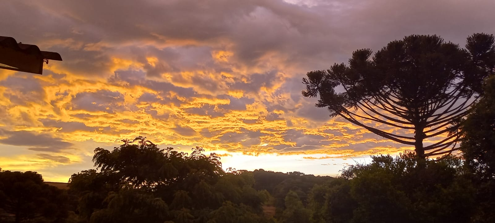

Paisagens fodas que eu vejo!

Saindo do trabalho no fim do dia. Welcome Winter! Ola horas extras kkkkkk.

O dia terminou frio e com nuvens bonitas por aqui hoje. 🌲

Fim do dia tbm (acho que tenho iperfoco) céu lindo mané.

Esse entardecer dourado de hoje estava perfeito. As refletindo o brilho de uma estrela escondida como um espelho do oculto. kkkk filosofei.